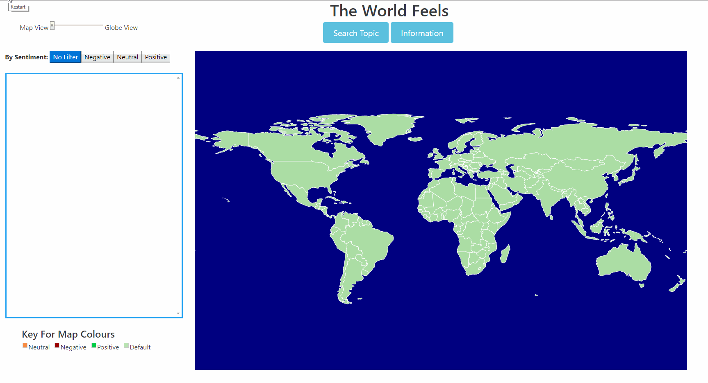
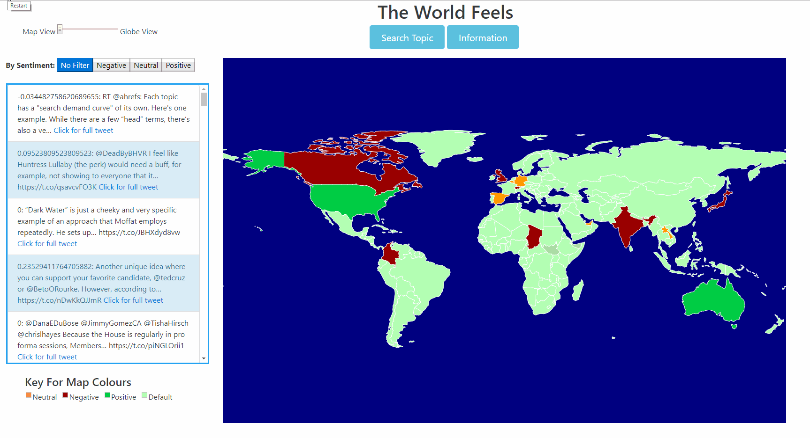
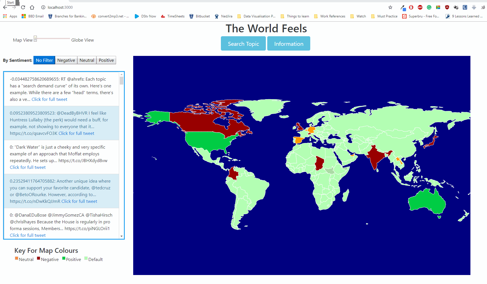

About & Instructions
About This Project
The World Feels:
This data visualisation aims to highlight the fact that behind every tweet in the world is human with
feelings.
These feelings are often embeded in the the tweets by means of the sentiments expressed by the tweet.
This data visualisation searches for tweets based on the user's input, performs sentiment analysis on
every single tweet
then shows the overall sentiment (either positive, neutral or negative) in each country based on the
averaged sentiments detected from tweets originating from each country.
The next few screens will walk you through the site. Click 'Next' below to continue
About This Project
Search Twitter Topics:
To begin, search for a topic, user or trend. To do this, you need to click on the 'Search Topic'
button located just below the main title. An interafce will pop-up with a field for you to enter the
word, phrase, user name or hashtag you wish to search for. After typing your search citerea in the
field, click the 'search' button. The system will fetch tweets on the topic, analyze them and then
display the results on the map.
The gif below show an example of the above mentioned process:

About This Project
The Different Views:
Once the data has been loaded, the visualiations can be viewed in one of two ways; either on a flat map
or a rotating globe. When you hover over the flat map, the country's name should be visible and on the
globe, you can stop it's automatic rotation and rotate it yourself by dragging it using the mouse
To switch between the two views and to rotate the globe, simply move the slider on the top-left corner
and one on the globe, drag it as you wish of the screen as shown
below

About This Project
The Key/Legend:
On both views (flat map and globe) the overall sentiments of tweets in the country will be indicated by
a colour. At the bottom-left of the screen
is a key, showing what each colour means.
The key is on the bottom-left corner of the screen as shown in the below image:

About This Project
Filter Tweets by Sentiment:
The application allows you to see the actual raw tweets that were analyzed. The full list of all the
tweets analyzed are on the left panel of the screen. This list can be filtered by sentiment. If you
wish to see all the negative tweets, all you have to do is click on the 'negative' button. You do the
same for neutral and positive.
To remove the filter, simple click on the 'No Filter' button.
Below is an example of how the filtering functionality can be used.
About This Project
Filter Tweets by Country:
The full list of tweets can also be filtered by country. If you'd like to view all the tweets from a
specif country, all you have to do is click on the country in the map.
To remove the filter, simple click on the 'No Filter' button.
Below is an example of how the filtering functionality can be used.
About This Project
The Tweet Beyond The Application:
There is a character limitation of 140 characters in the tweet view panel. Should you wiish to view the
original full tweets, along with all the interaction it had on the twitter, simply click on the text
that reads: 'Click for full tweet'. A new tab will be opened, directing you to the original tweets.
The clickable 'Click for full tweet' text is found at the end of evry single tweet.
Below is an example of how the launching to external url functionality can be used.
